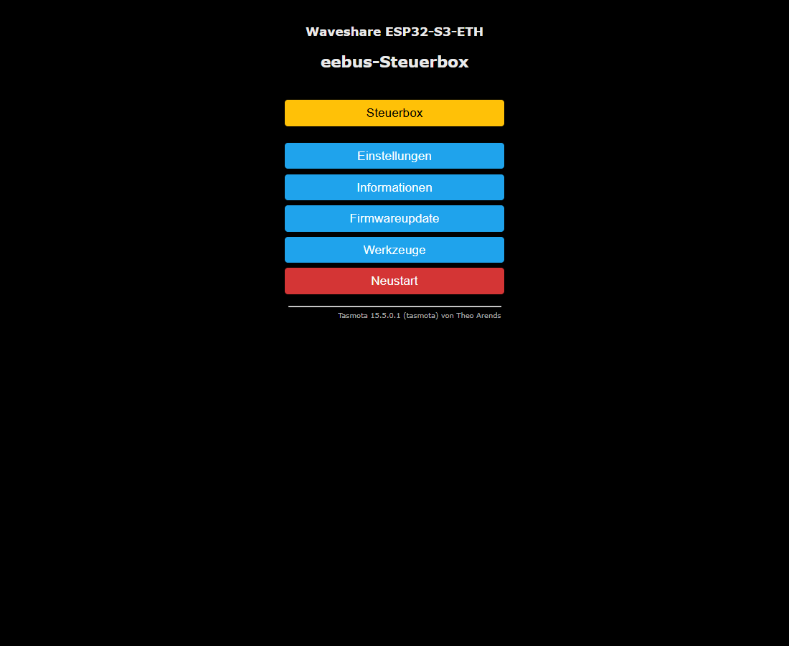
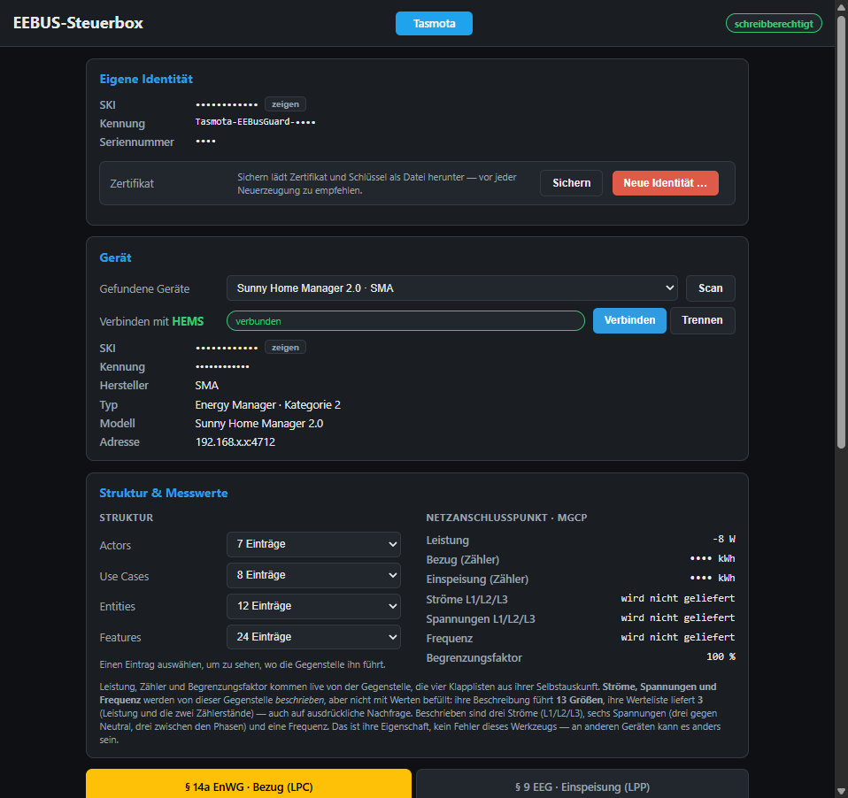
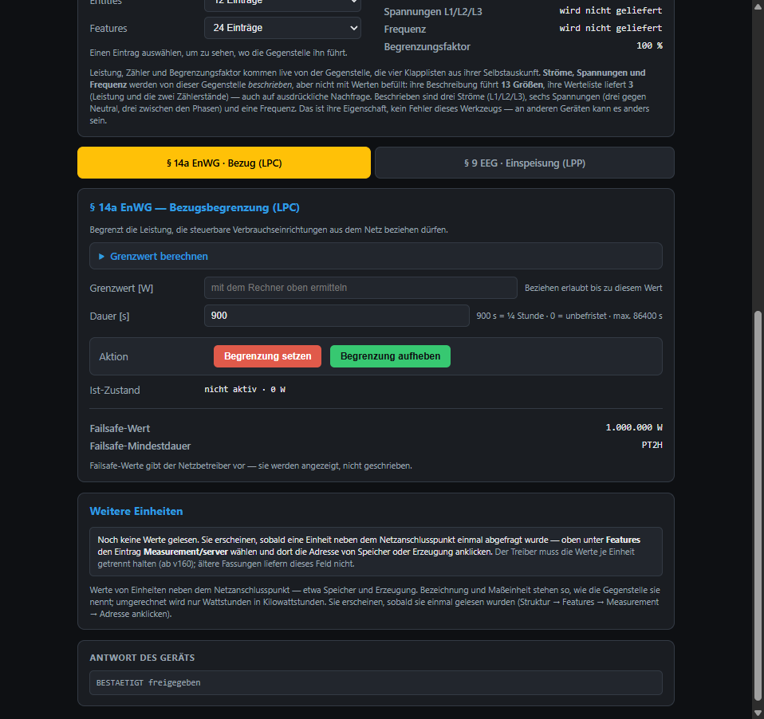
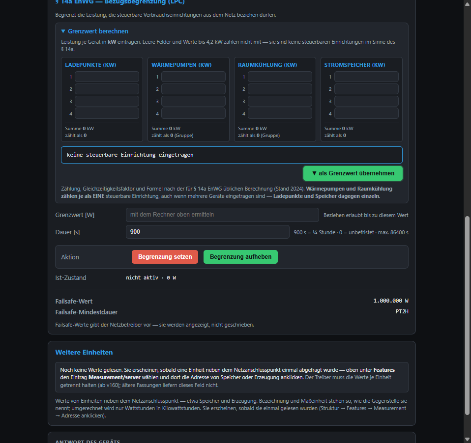
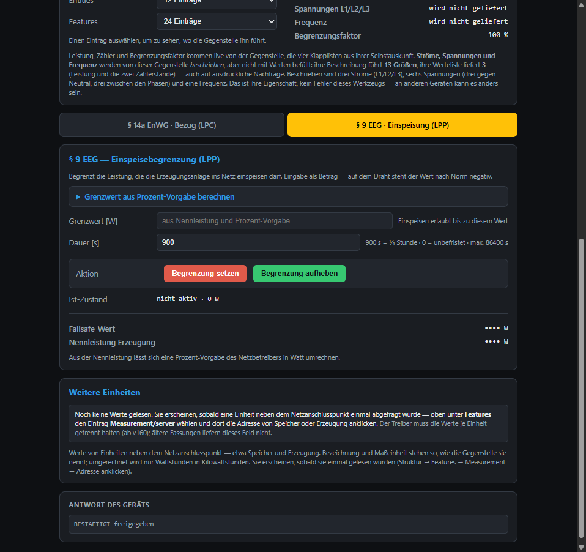

xdrv_126 v189 · Persönliche Daten in den Bildern unkenntlich gemachtDie Steuerbox spielt die Rolle, die sonst die Steuerbox des Netzbetreibers am Smart-Meter-Gateway übernimmt. Sie schickt per EEBUS zwei Arten von Vorgaben:
Gegenstelle ist entweder ein HEMS, das die Vorgabe auf seine Geräte verteilt, oder direkt ein einzelnes Gerät (Direktsteuerung, zum Beispiel ein Wärmepumpen-Gateway oder die SteuVE, eine steuerbare Verbrauchseinrichtung auf Tasmota mit eigener Anleitung).
Die Box kann gleichzeitig mit einem HEMS und mit einem einzelnen Gerät verbunden sein. Verbindungen laufen über IPv4 oder IPv6; ruft eine Gegenstelle selbst an, ordnet die Box die Verbindung über die Adresse oder – wenn das Gerät mehrere Adressen hat – über die Kennung, die es beim Verbinden mitschickt, dem gefundenen Gerät zu. Im Log steht dann „… ist SKI … (ueber die Kennung …)“.
Auf der Tasmota-Hauptseite der Box auf „Steuerbox“ klicken. Die Seite liegt als Datei steuerbox.html im Dateisystem der Box (Flash oder SD).


EEBusAutoConn -1).Links die Selbstauskunft der Gegenstelle (Actors, Use Cases, Entities, Features), rechts die Live-Werte des Netzanschlusspunkts (Leistung, Zählerstände, Begrenzungsfaktor). Was die Gegenstelle nicht liefert, steht als „wird nicht geliefert“ da.

Failsafe-Wert / Failsafe-Mindestdauer gibt die Gegenstelle bzw. der Netzbetreiber vor; die Box zeigt sie nur an. Sie gelten, wenn die Verbindung zur Steuerbox abreißt.

Der Rechner ermittelt den Mindest-Grenzwert nach der Formel der Festlegung BK6-22-300 (Anlage 1): Werte bis 4,2 kW zählen nicht mit, Wärmepumpen und Raumkühlung zählen je als eine Einrichtung, Ladepunkte und Speicher einzeln; dazu der Gleichzeitigkeitsfaktor. Der Rechner sendet nichts – erst „Begrenzung setzen“ schickt den Wert.

Unten auf der Seite steht die letzte Antwort der Gegenstelle, zum Beispiel „BESTAETIGT freigegeben“ oder „BESTAETIGT aktiv 6888 W“. Eine Ablehnung steht ebenfalls dort.
Alles auf der Seite geht auch per Konsole (Tasmota-Hauptseite → Werkzeuge → Konsole). <ziel> ist eine SKI (oder ihr eindeutiger Anfang), hm/auto für die einzige stehende Verbindung, oder eine Nummer aus der Fundliste (nicht empfohlen, die Reihenfolge wechselt).
| Befehl | Bedeutung |
|---|---|
EEBusScan | mDNS-Suche nach EEBUS-Geräten (dauert etwa 1,5 s) |
EEBusPeers | gefundene Geräte mit SKI, Typ, Adresse (Ip, bei IPv6 zusätzlich Ip6) und Betriebsart |
EEBusConnect <ski> | Verbindung aufbauen; beim ersten Kontakt die SKI der Box bei der Gegenstelle bestätigen |
EEBusDisconnect [ski] | Verbindung trennen; ohne Angabe alle |
EEBusStatus | Verbindungen mit Handshake-Phase und letztem Ergebnis |
EEBusLpc <ziel> <watt> [s] | § 14a-Bezugsgrenze setzen, z. B. EEBusLpc auto 4200 900 |
EEBusRelease <ziel> | Bezugsgrenze freigeben |
EEBusReleaseAll | alle Bezugsgrenzen freigeben (nicht die Einspeisung) |
EEBusLpp <ziel> <watt> [s] | § 9-Einspeisegrenze setzen (Betrag angeben) |
EEBusLppFrei <ziel> | Einspeisegrenze freigeben |
EEBusCertEEBusCert 2 | eigene SKI anzeigen Zertifikat neu erzeugen (Kopplungen verfallen!) |
EEBusAutoConnEEBusAutoConn -1 | Zustand des Wiederaufbaus anzeigen gemerkte Gegenstelle vergessen (kein Wiederaufbau mehr) |
EEBusData | Ist-Zustände und Messwerte aller Verbindungen als JSON |
tls connect err=-1002)-1002 heißt: die TCP-Verbindung kommt nicht zustande, das Gerät nimmt auf diesem Port nicht an. Manche Geräte bauen die Verbindung nur selbst auf (eingehend). Dann die SKI der Box im Gerät als vertrauenswürdig eintragen und warten, bis das Gerät anruft.
tls connect err=296Die Gegenstelle bricht den TLS-Aufbau ab, weil die Box ihr Zertifikat nicht mitschickt. Die Firmware braucht USE_MQTT_CLIENT_CERT und 24 KB Stapel (ab dem aktuellen Stand automatisch gesetzt).
Ein Gerät drosselt nur, wenn es gerade mehr zieht als erlaubt. Liegt sein Verbrauch unter der Grenze, nimmt es sie an, ändert aber nichts. Bei einem HEMS zusätzlich prüfen, ob die Verbraucher dort gekoppelt sind.
Die SteuVE bindet die Box erst als Energy Guard, wenn die erste Grenze kommt. Bis dahin zeigt sie „autonom“ – das ist so gewollt. Nach „Begrenzung setzen“ wechselt sie auf „gesteuert“.
Eine Nachricht ging nur teilweise an die Gegenstelle. Die Box baut diese Verbindung dann ab und verbindet neu, statt mit einem beschädigten Datenstrom weiterzuarbeiten. Kommt das häufig vor, WLAN-Empfang bzw. Netzwerk der Gegenstelle prüfen.
Nie zwei Boxen mit demselben Zertifikat gleichzeitig betreiben – die Gegenstelle kann sie nicht unterscheiden.